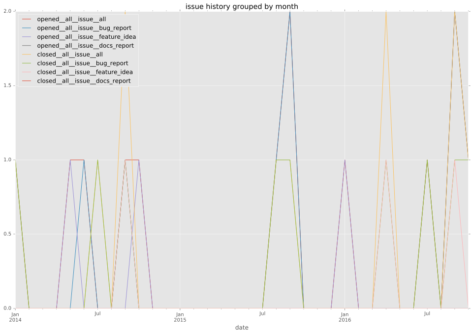
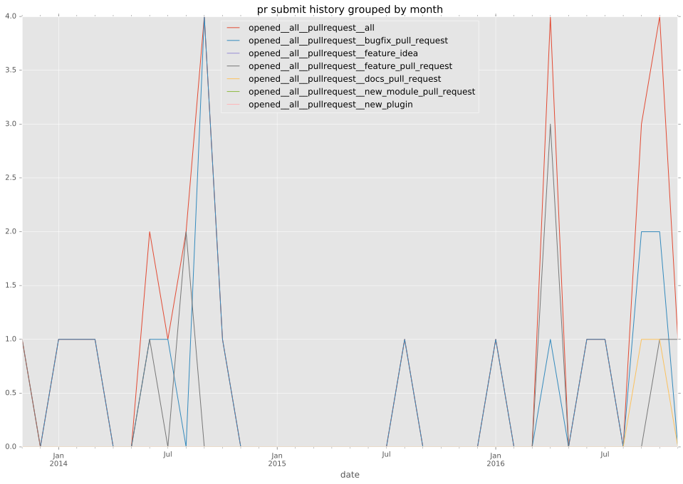
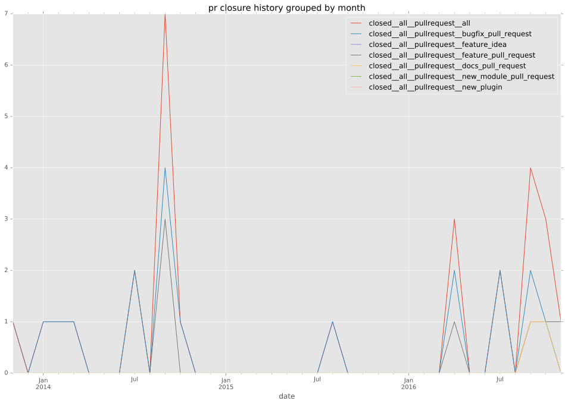

authors
- matze
maintainers
- matze
- robinro
contributors
- toabctl : 1 commits
- hacosta : 17 commits
- robinro : 72 commits
- bmanojlovic : 3 commits
- pief : 1 commits
- abadger : 2 commits
- matze : 34 commits
- resmo : 1 commits
- alxgu : 4 commits
- jctanner : 2 commits
- jlec : 5 commits
total issue counts
unknown: 1
feature pull request: 6
pullrequest: 29
docs pull request: 2
bugfix pull request: 21
feature idea: 2
issue: 12
bug report: 9
issue history

pullrequest history


days open by issue type
bugfix pull request
count: 33
std: 16.1518598235
min: 0
max: 90
median: 0.0
mean: 6.51515151515
all
count: 57
std: 44.837299859
min: 0
max: 221
median: 3.0
mean: 21.2105263158
pullrequest
count: 0
std: nan
min: nan
max: nan
median: nan
mean: nan
docs pull request
count: 4
std: 2.30940107676
min: 1
max: 5
median: 3.0
mean: 3.0
feature pull request
count: 9
std: 52.7875721906
min: 4
max: 127
median: 45.0
mean: 52.5555555556
feature idea
count: 2
std: 25.4558441227
min: 105
max: 141
median: 123.0
mean: 123.0
issue
count: 0
std: nan
min: nan
max: nan
median: nan
mean: nan
bug report
count: 8
std: 77.2018458329
min: 0
max: 221
median: 0.5
mean: 32.875
closures grouped by total days open